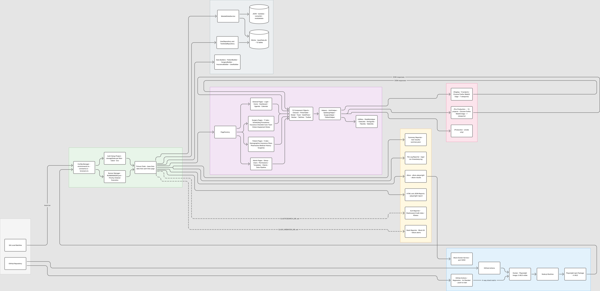

System Architecture
Tests sit on a layered dependency-injection stack; data flows in from interchangeable sources; results flow out to six reporting channels. Every layer has a single owner and a single responsibility — verified against SOLID, principle by principle.
Framework Architecture Diagram

PulseCheck end-to-end architecture · Triggers → GitHub Actions / Docker → Core (Config, Auth, Runner Manager, Fixture Chain) → Data Layer (SQLite 12-table schema, JSON, ModuleDataService) → UI Abstraction (33 Page Objects, 13 Components, Helpers) → Surgimate (staging / pre-prod / production) → Reporting (Allure · HTML · File logs · ELK · Slack)
Layer Explorer — expand each layer
Layer 1 · Base fixtures — execution context
testConfig (environment, role, sandbox,
base/API URLs) from one registry in config/environments.ts, driven by
PLAYWRIGHT_ENV / PLAYWRIGHT_ROLE / PLAYWRIGHT_CLIENT. Nothing else in
the framework re-derives an environment default — single source of truth.Layer 2 · Data fixtures — repositories behind interfaces
userRepository: IUserRepository and
testDataRepository: ITestDataRepository are typed as interfaces (DIP);
the concrete backends are named only in this composition root. Includes the pre-resolved
testData bundle and the moduleData service
Swapping the storage backend touches one file.Layer 3 · Auth fixtures — pre-authenticated, per-role sessions
authenticatedPage uses cached storageState
(one file per role × sandbox × environment). Multi-role tests get concurrent sessions —
coordinatorPage and surgeonPage side by
side in a single test. Auth setup retries 3× and authenticates every available role.Layer 4 · Page fixtures — POM via factory + components
PageFactory (OCP);
widget components (modal, toast,
chooserFor) own their selectors and waits. Specs never touch raw CSS.Page Objects & Components — single-owner locators
SOLID Compliance — verified, not aspirational
S · Single Responsibility
The 535-line BasePage god-class (≈100 methods, most with zero callers) was decomposed to a cohesive core. Each component owns one widget; each fixture file owns one DI layer.
O · Open/Closed
New pages join via PageFactory, new data sources via the source registries, new tenants via a data row — no existing code changes.
L · Liskov Substitution
Six compiler-verified signature
violations (pages overriding navigate() incompatibly, chooser
repurposing selectOption) were eliminated. Rule: subclasses add,
never repurpose.
I + D · Interfaces & Inversion
Read/write repository contracts segregated; credentials, test data, and runner sources all sit behind injected interfaces — JSON→SQLite or DB→vault migrations are one-file changes.
Folder Structure
framework/ ├── config/ environments.ts · constants.ts · timezone.ts (ET) · browsers.ts · playwright-base.ts · sql-queries.json · module-queries.json ├── data/ test-data.json · builders/ (Patient/Surgery/Insurance/User) · factories/ · runnerlist/RUNMANAGER.json · testdata/ · db/migrations/ ├── testdata/ database/inputData.db — master SQLite: users · runmanager · testdata · logindata ├── database/ IDataStore · repositories (user/test-data) · user-sources (db) · module-data service ├── fixtures/ base → data → auth → page (layered DI) · index.ts ├── pages/ BasePage · PageFactory · 33 page classes (surgery/ 11 tabs · patient/ 5 tabs · admin/ 4 · general-admin/ 3) ├── page-components/ 13 components: table · chooser · modal · confirmation · tabs · toast · batch-save · date-picker · file-upload · toolbar · navbar · quick-finder ├── runner/ RunnerManager singleton · plan · data-provider · sources (json/db) · normalize ├── helpers/ AuthHelper · ApiSetupHelper · SurgeryHelper · PatientHelper ├── utilities/ StabilityHelper · WaitUtils · DateUtils (ET) · StringUtils · FileUtils ├── reporters/ summary-reporter · file-log-reporter · elk-reporter · slack-reporter ├── hooks/ global-setup.ts · global-teardown.ts · auth.setup.ts (storageState per role × sandbox × env) ├── tests/ e2e/ · smoke/ · regression/ · runner-managed/ ├── scripts/ run-matrix.ts · validate-data-layer.ts · validate-runner-manager.ts · generate-runner-data.ts ├── docker/ Dockerfile (playwright:v1.48.0-noble) · docker-compose.yml · docker-compose.ci.yml └── .github/workflows/ smoke.yml (PR gate) · regression.yml (4-shard nightly)